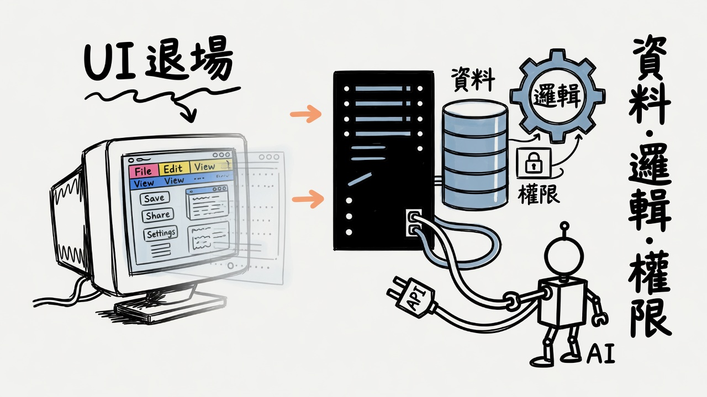
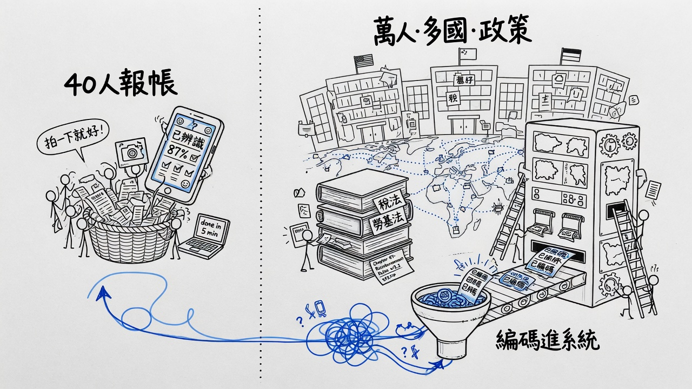
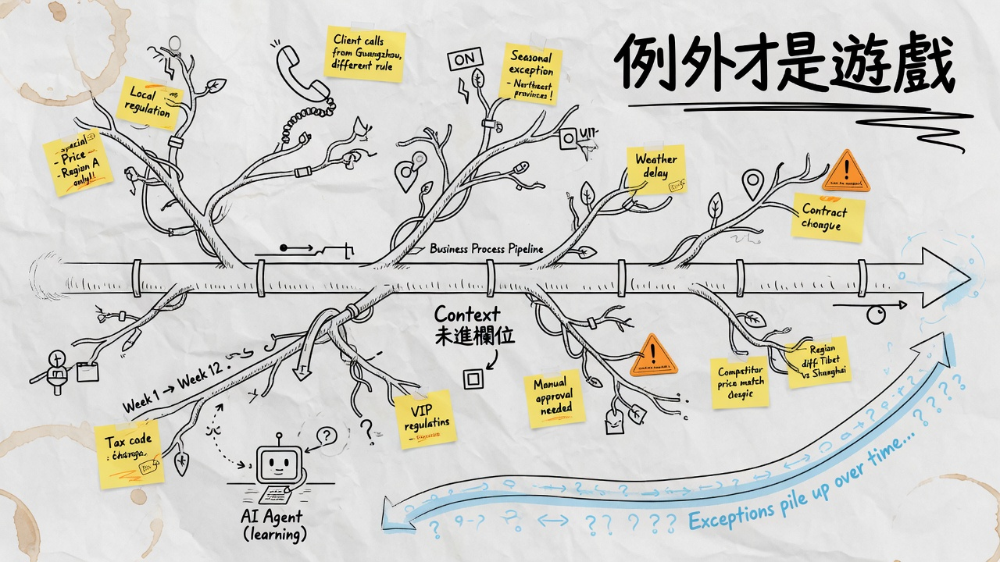
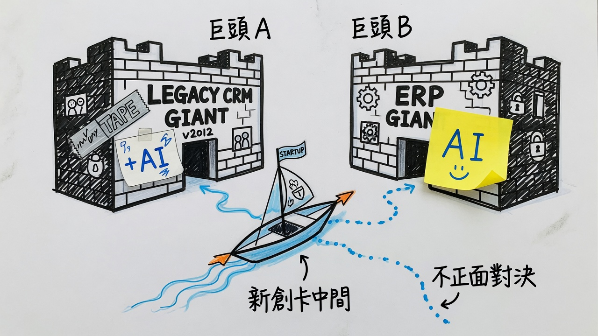
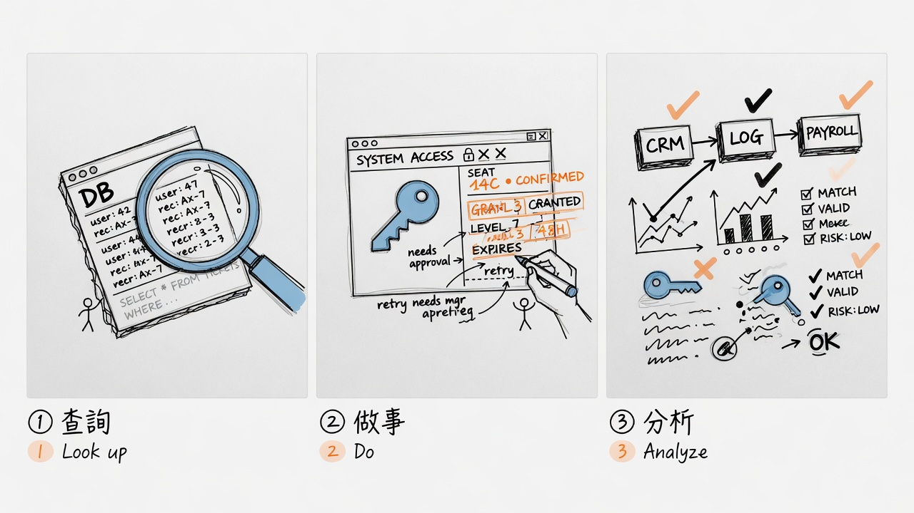

01 · HEADLESS
UI 退場
介面幽靈化；Agent 用 API 接機架、資料庫、邏輯與權限。價值在核心，不在 Dashboard。
a16z 對談濃縮 · Elena × Seema Amble × Steven Sinofsky · 2026-07-13 入庫
消失的可能不是 SaaS，而是「人類必須登入後台」的使用方式。 UI 退場；資料、邏輯、權限與例外規則不會退場。

介面幽靈化；Agent 用 API 接機架、資料庫、邏輯與權限。價值在核心，不在 Dashboard。

OCR 籃子解決不了 20 國法律與差旅政策。規則被「編碼進系統」後無法一鍵取代。

主流程只是幹管；真正有趣的是未進欄位的 context 與長尾例外。Agent 要時間學。

兩座硬掛 AI 的城堡之間，小船走新航道——不正面對決品類與 8000 件准入清單。

Look up 輕量；Do 牽涉身份／席位／權限；Analyze 跨系統且最需逐步驗證。不可混為一談。
| 判斷 | 內容 |
|---|---|
| 不是「SaaS 消失」 | 消失的更可能是人類必須登入後台 UI 的使用方式 |
| Headless | 不是拿掉軟體，而是把 GUI 從核心挪開；價值在資料、邏輯、權限、例外規則 |
| Agent 三種事 | ① 查詢 ② 做事（寫入／身份／席位） ③ 分析（多系統、需驗證） |
| SAP 為什麼還在 | 封裝的是「公司怎麼運作」，不是 Postgres + API 能取代的表格 |
| 整場遊戲 | 例外處理 + context（未寫進欄位的政策）+ 時間累積 |
| 新創機會 | 不正面對決 SoR；卡巨頭之間、跨部門翻譯、資料之上採取行動、實體垂直 |
| 類型 | 本質 | 難點 |
|---|---|---|
| Look up | 查詢 | 輕量；很多 headless 只是換皮查詢 |
| Do | 寫入／執行動作 | 身份、憑證、席位、權限、政策 |
| Analyze | 跨系統分析 | 適合長跑；幻覺與逐步驗證最重 |
Headless ≠ Agent；要先講清楚自己在哪一種。
| 來源 | 機制 |
|---|---|
| 人類互動 | 讀寫頻率、下游流程、未成文 SOP、肌肉記憶 |
| 組織政治 | 新業務副總指定 Salesforce；財務／行銷共用真相來源 |
| 合規稽核 | 必須乾淨追蹤；替代方案少 |
| 收錢 | 已在付費 → 停付極難 |
| 怪細節 | Outlook 代理存取、共用行事曆例外——60 萬席位拔不掉 |
慣性與「已付費很久、滲進日常」比功能清單更重要。
| 迷思 | 反駁 |
|---|---|
| Postgres + API = 取代 SAP | 資料庫不懂公司如何運作 |
| 40 人 OCR 報帳 = 企業報帳 | 萬人、多國、法律與內部政策 → 編碼成這家公司獨有 |
| vibe code 一個 CRM | 難在：記什麼、組織邊界、誰長期維護、隨業務演進 |